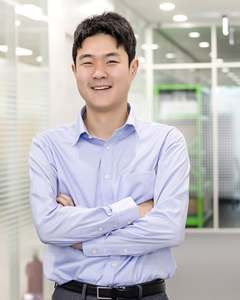

Han Sol Jung, Ph.D. · 정한솔
선임연구원 · 한국화학연구원Senior Researcher · KRICT
Plant BOP & Energy Systems Engineering · Technology Translation & Engineering Decision-Making
PI와 직접 지도 연구자를 소개하고, 외부 협력이 가능한 기술 분야를 설명합니다.Meet the PI and directly mentored researchers, and explore the technical areas open to collaboration.
저 TRL 기술평가, 산업 plant engineering과 현재의 BOP·plant-system integration 연구를 하나의 연속된 문제의식으로 연결합니다.The research trajectory connects low-TRL technology assessment, industrial plant engineering and current BOP and plant-system integration research.
고려대학교 · 2022Korea University · 2022
지도교수: 강용태 교수Advisor: Prof. Yong Tae Kang
화학 복수전공Double Major in Chemistry
고려대학교Korea University
한국화학연구원Korea Research Institute of Chemical Technology (KRICT)
HD한국조선해양HD Korea Shipbuilding & Offshore Engineering
미래기술연구원 · 화공시스템연구실Advanced Research Center · Chemical Process System Research Center
한국과학기술연구원(KIST)Korea Institute of Science and Technology (KIST)
도시에너지시스템연구단Center for Urban Energy System Research
김광호 박사 연구팀 · 화학축열/열에너지 시스템 연구Research with Dr. Kwang Ho Kim · Thermochemical heat storage
신용보증기금 녹색인증 평가위원Green Certification Evaluation Committee Member · Korea Credit Guarantee Fund (KODIT)
대한기계학회 종신회원Lifetime Member · The Korean Society of Mechanical Engineers (KSME)
한국화학공학회 정회원Regular Member · The Korean Institute of Chemical Engineers (KIChE)
대한설비공학회 정회원Regular Member · The Society of Air-Conditioning and Refrigerating Engineers of Korea (SAREK)
AI 기반 스마트팜 기술AI-enabled smart farming technology
최근 외부 발표 중 직접 발표한 세미나·국제행사·학술발표를 선별해 공개합니다.Selected seminars, international talks and professional presentations delivered directly by the PI.
KRICT 연구분야 소개 · 연구자 진로탐색KRICT research areas · researcher career exploration
지속가능한 에너지 솔루션을 위한 시스템 엔지니어링: 실험실 규모에서 실증 플랜트까지Systems Engineering for Sustainable Energy Solutions: From Laboratory Scale to Demonstration Plants
지속가능한 에너지 솔루션을 위한 시스템 엔지니어링: 실험실 규모에서 실증 플랜트까지Systems Engineering for Sustainable Energy Solutions: From Laboratory Scale to Demonstration Plants
조선해양 분야에서의 탄소 중립 사회로의 변화: 수소 생산/운송/활용을 중심으로Transition toward Carbon Neutrality in the Maritime Sector: Hydrogen Production, Transportation and Utilization
조선해양 분야에서의 탄소 중립 사회로의 변화: 수소 생산/운송/활용을 중심으로Transition toward Carbon Neutrality in the Maritime Sector: Hydrogen Production, Transportation and Utilization
Decarbonization in the Industry: Solutions for Carbon Neutrality in the Marine Sector
Green Hydrogen Production, Transportation and Utilization in the Marine Sector
Green Hydrogen Production, Transportation and Utilization in the Marine Sector
선박용 e-메탄올 연료 합성 공정 개발 타당성 분석: 조선해양 분야에서의 탄소 중립 사회로의 변화Feasibility Analysis of an e-Methanol Fuel Synthesis Process for Marine Applications
계산화학을 이용한 해수 수전해 OER 촉매 개발Computational-Chemistry-Based Development of a Seawater Electrolysis OER Catalyst
해상용 수소 생산 플랫폼 기술 개발 전략Technology Development Strategy for Marine Hydrogen Production Platforms
low-TRL · CO₂ conversion · TRL · TEA · LCA
equipment · BOP · design basis · CAPEX/OPEX · scale-up
engineering data · BOP · plant integration · operability · engineering decisions
박사과정에서는 저 TRL CO₂ 전환기술의 성능평가, TRL, LCA/TEA와 상용화 판단을 다뤘고, 산업체에서는 실제 plant engineering을 통해 장치, BOP, 설계기준, CAPEX/OPEX와 scale-up을 경험했습니다. 2025년 8월 15일 KRICT 합류 이후 이 두 문제의식을 실제 설계자료와 실증 데이터를 사용하는 BOP·plant integration, operability와 engineering decision으로 통합하고 있습니다.
Doctoral work addressed performance evaluation, TRL, LCA/TEA and commercialization decisions for low-TRL CO₂ conversion. Industrial plant-engineering experience added equipment, BOP, design basis, CAPEX/OPEX and scale-up. Since joining KRICT on 15 August 2025, these perspectives have been integrated into evidence-based BOP and plant integration, operability and engineering decisions.
e-SAF 공정모델과 실제 engineering data를 연결하여 공정 성능과 지속가능성·경제성 의사결정을 연구합니다.
Connects e-SAF process models with engineering data to support process-performance, sustainability and economic decisions.
반응기와 multiphysics 해석 결과를 플랜트 수준의 공정모델과 연결하여 반응시스템–플랜트 인터페이스와 운전가능성을 연구합니다.
Connects reactor and multiphysics analyses with plant-level process models to study reactor–plant interfaces and operability.
CO₂-메탄올 공정의 실제 설계·운전데이터를 동적 공정모델과 연결하여 가변운전 조건의 공정 거동과 운전가능성을 연구합니다.
Connects engineering and operating data from CO₂-to-methanol systems with dynamic process models to study variable-operation behavior and operability.
P2E는 다음 역량을 plant-system 연구와 연결하는 협력을 지향합니다.P2E welcomes collaborations that connect these capabilities with plant-system research.
촉매·반응기 성능을 BOP 요구조건과 플랜트 수준의 제약으로 연결합니다.Connect catalyst and reactor performance with BOP requirements and plant-scale constraints.
분리·재순환·flowsheet 구성을 통합 공정의 성능과 설계 판단으로 연결합니다.Connect separation, recycle and flowsheet synthesis with integrated process performance and design decisions.
AI·최적화·디지털 모델에 실제 물리와 장비 운전제약을 반영합니다.Bring physical and equipment operating constraints into AI, optimization and digital models.
설계자료와 실증·운전데이터를 scale-up 및 플랜트 운전 판단으로 연결합니다.Connect engineering, demonstration and operating data with scale-up and plant-operation decisions.
TEA·LCA·GHG 평가를 실행 가능한 공정·설비 의사결정과 연결합니다.Connect TEA, LCA and GHG assessment with actionable process and equipment decisions.